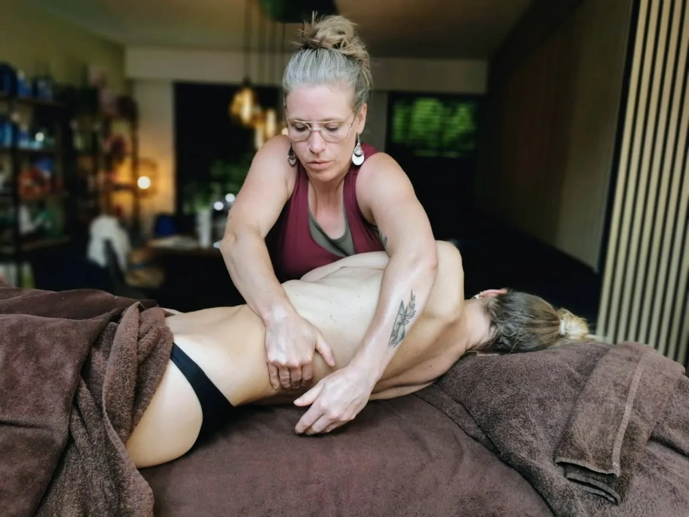

De bezielster
Nathalie
Altijd een nieuw idee en een nieuwe opleiding op zak. Voor massages, gelaatsverzorging, oorkaarsen, pedicure en gelnagels.
- Esthetische pedicure€40
- Gellak, 1u15€45
- Wenkbrauwenvanaf €10